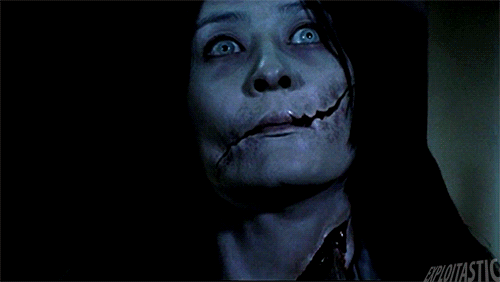

Apresentação
Este site tem como intuito apresentar de maneira geral, tópicos de terror, onde será possível encontrar recomendações de filmes, animes, séries e jogos. logo abaixo será fornecido um pequeno texto sobre a origem do terror, além de algumas especificações sobre o assunto. Aproveite!
Origem do terror
Sensações de medo, frio na barriga, insônia e temer a vida, por exemplo, começaram a surgir logo nos primórdios do próprio cinema. George Méliès, conhecido como o pioneiro do cinema, idealizou e produziu seu primeiro filme de terror em 1896, um curta-metragem de 2 minutos, chamado Le Manoir du diable (O Castelo do Demônio). O filme contém muitos gestos e expressões faciais a fim de demonstrar sentimentos, pensamentos e ideias sem utilizar palavras e foi intencionalmente feito tendo em vista entreter as pessoas, mais do que assustá-los. Apesar de passar um tempo sem filmes tão relevantes, o terror voltou a se destacar com o filme Gabinete do Doutor Caligari, um filme mudo de 1920, com duração total de 1h 11min. Ao decorrer dos anos, foram criadas diversas obras de terror, que alcançam muitos telões de cinema, assustando o público. Temos como exemplo na década de 1930, onde a Universal Studios lança os “monstros clássicos da Universal”, como Drácula (1931) e Frankenstein (1931).

Por que sentimos medo ao assistir um filme de terror?
Existem inúmeros tipos de truques cinematográficos para estimular sensações de medo e ansiedade no espectador, seja por meio de sons, imagens, suspense e pelo foco do espectador na história. Além disso, os tão famosos ‘jump scares’, ou sustos, são as formas que os filmes de terror usam para estimular um susto rápido, entretanto, apesar de obtermos o sentimento e os reflexos característicos do medo, a sensação de estarmos no conforto de nossas casas ou na poltrona do cinema nos impede de ter o pacote sentimental completo, gerando assim, uma espécie de “medo controlado", onde é possível, por exemplo, não sair correndo da poltrona ou sofá.

Por que assistimos filmes de terror mesmo com medo?
Estudos apontam que assistimos filmes de terror apesar do medo, pois é reconfortante ter a sensação de adrenalina sabendo que está em um ambiente seguro e que não vai ser esfaqueado ou estrangulado como em um filme. Além disto, é possível para nós, através da experiência de ver alguém sendo perseguido, aumentar nossa empatia, se importando com o personagem e acabar criando laços com a pessoa do filme, podendo ser um dos motivos que torna mais satisfatório repetir a situação, a sensação de torcer freneticamente por alguém. Um dos outros motivos de assistir filmes de terror apesar do medo é o fato de você ficar feliz por terminar um filme que estava te deixando desconfortável. É uma sensação de compensação, onde você achava impossível de terminar e conseguiu. O prazer da recompensa anula praticamente o medo, te dando a vontade de ter aquela experiência novamente.
